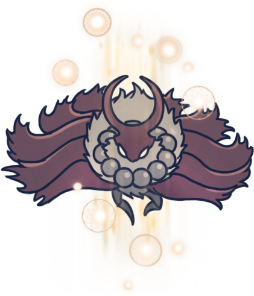
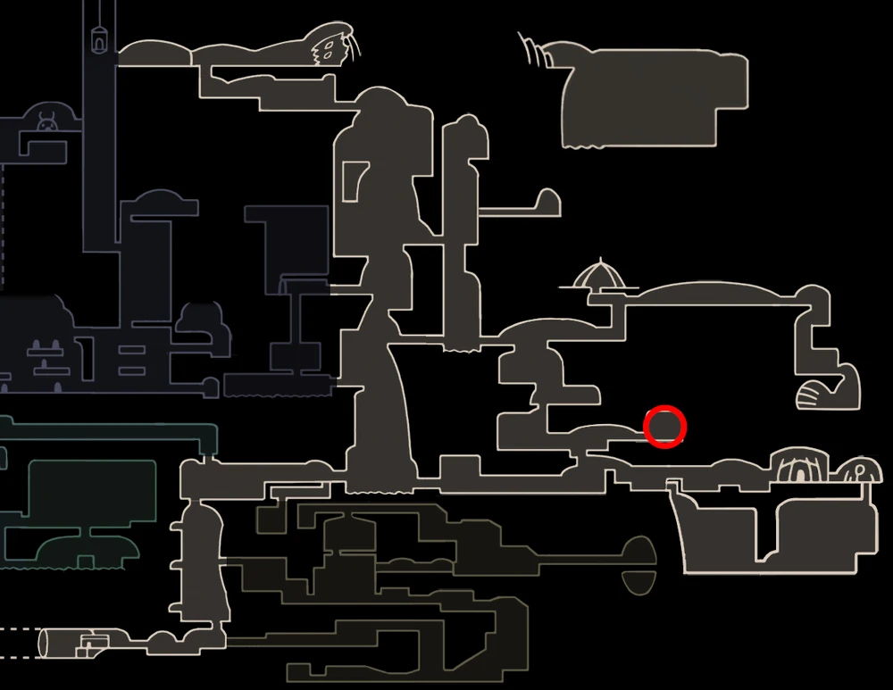

MARKOTH
 Boss In Action Browse More Bosses
Browse More Bosses
Markoth can be found in the Southeast side of Kindom's Edge. The Shade Cloak is needed to access his cave.
Markoth was one of only 2 Moth Tribe members known to carry a weapon. Though most moths were passive, Markoth was a fierce warrior who was able to use dream magic, a trait common in the Moth Tribe, most likely due to their connection with The Radiance and being born from her Light. He traveled to the edges of the Kingdom of Hallownest to seclude himself from others to meditate, trying to "uncover a truth long forgotten." Anyone who entered Markoth's secluded area would be slain by him if he believed they would threaten him, regardless of their reasons. Over time, he died, alone in his cave, his remains not visible. After being defeated by the Knight, he reminisces about how he has never been beat in battle before. He says that warriors, knights, kings and even time itself have no power over him, only the Knight, who is the darkness, come to consume him.
Health:
250 | 400 | 520 | 624 | 705
Scaling with Nail Upgrades 0 | 1 | 2 | 3 | 4 respectively.
Moves: